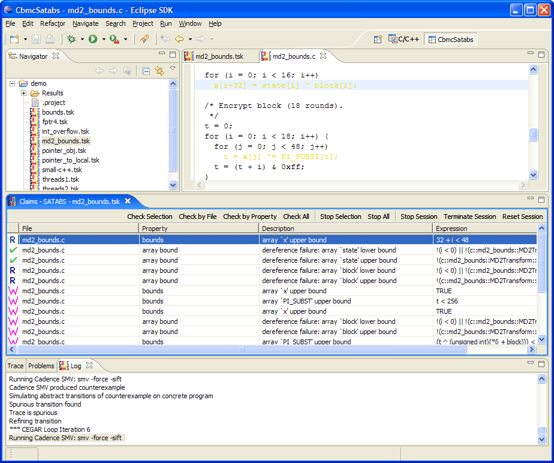

代码功能验证工具
首页：http://www.cprover.org/cbmc/

CBMC全称是a Bounded Model Checker for C and C++ programs。是一个C/C++代码越界分析检查工具。截至二零一四年十一月二十三日，CBMC的最新版本号为4.9。CBMC支持C89标准、C99标准和C11的大部分标准，以及gcc和Visual Studio绝大多数的扩展功能。CBMC可以检查数组边界越界问题、缓存溢出问题、指针的安全问题、异常处理和用户指定的断言等。
安装
支持Windows和Linux
Linux 下可以使用svn下载源代码
$ svn co http://www.cprover.org/svn/cbmc/releases/cbmc-4.9
或者下载源代码包：cbmc-4-9-linux-32.tgz或cbmc-4-9-linux-64.tgz
Windows 可以下载cbmc-4-9-win.zip，内含所需的exe文件。
Ubuntu/Debian 用户可以从官方库安装
$ apt-get install cbmc
Fedora/CentOS/RedHat 用户可以从官方库安装
$ yum install cbmc
Linux 平台编译方法，和Windows 平台环境搭建，请参看CBMC用户手册。